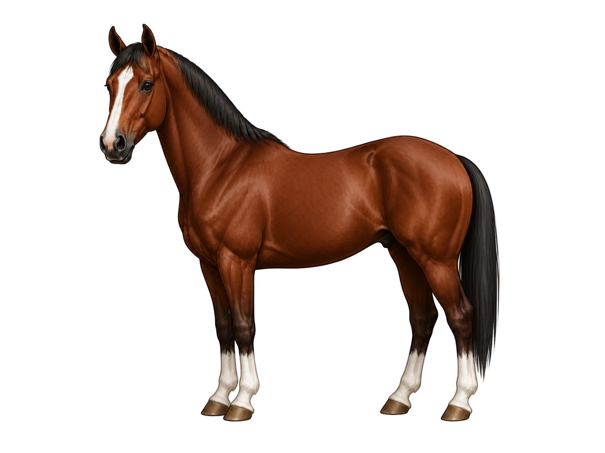

The Whole Horse
Every major landmark from poll to hoof, shown together on a single diagram. Use this to see how all five regions connect. The regional diagrams — head, neck and shoulder, body, front legs, and hind legs — are in the tabs on the Parts of the Horse lesson page.

💡 Practice Tip
Cover the labels and try to name each marked structure from the dot alone. Work top to bottom, front to back — poll to hoof. That is the order vets, farriers, and trainers use when examining a horse.